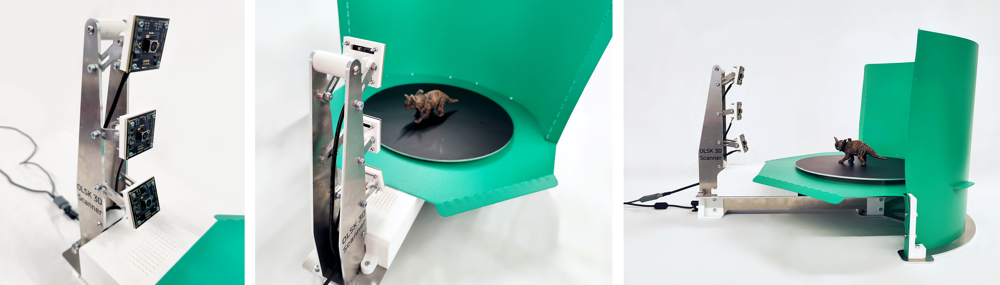
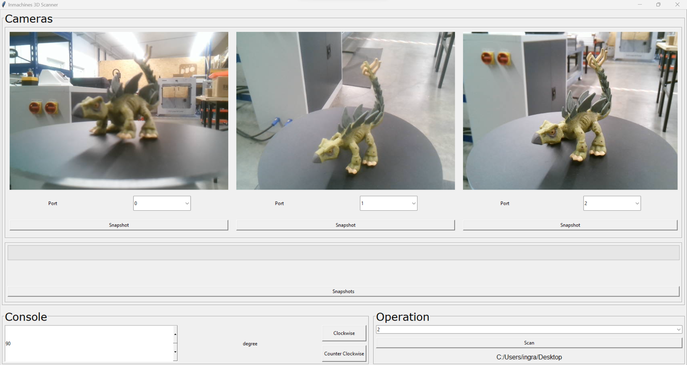

OLSK 3D Scanner V2
Open Lab Starter Kit · 3D scanning

The OLSK 3D Scanner is an open source 3D scanner with a turntable and three cameras for faster capture of 3D models. With a simple, compact design, it can be replicated and assembled in fab labs, schools, or at home. A USB connection lets users process scans with custom software, and camera positions can be adjusted for different object sizes and shapes.
Specifications
- 3 × USB camera modules with Sony IMX179 sensor and autofocus
- 3 mm CNC-milled aluminum frame
- GT2 10 mm belt drive
- NEMA 17 stepper motor

Software
I co-designed the scanner software with Sulaiman Tanbari:
- Laptop side — receives images from three cameras and controls the turntable
- PCB side — firmware to drive the scanner mechanics

Project Files
Credits
Designed and built by InMachines Ingrassia GmbH as part of the Open Lab Starter Kit (OLSK) for the Dtec project at Fab City Hamburg.
Machine design: Wilhelm Schütze, Alberto Porri
Software design: Marcello Tania, Sulaiman Tanbari
License
Hardware, CAD, PCB, and BOM: CERN Open Hardware Licence v2 (Weakly Reciprocal). Documentation and media: CC BY-SA 4.0.